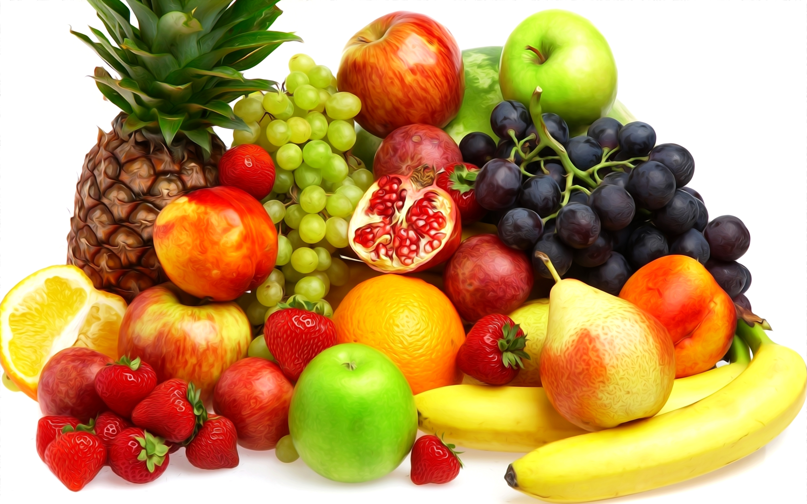

| Fresh Fruits | |
|---|---|
|
In common language usage, "fruit" normally means the fleshy seed-associated structures of a plant that are sweet or sour and edible in the raw state, such as apples, oranges, grapes, strawberries, bananas, and lemons. |
 |